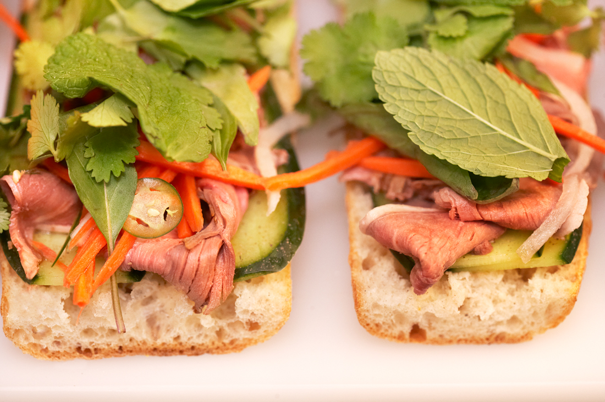

Blue Ginger
Blue Ginger is officially closed as of June 3rd, 2017. After 19 years of wonderful service, we greatly appreciate all the support over the years and hope you will visit Blue Dragon, Chef Ming Tsai's Asian-Gastro Pub in the Fort Point neighborhood in Boston. Look out for Chef Tsai's new venture ChowStirs in downtown Boston slated to open early 2018.
Ming Tsai opened Blue Ginger in February of 1998, in the Boston suburb of Wellesley, Massachusetts. Designed by Ming in conjunction with a Feng Shui Master, Blue Ginger features an open kitchen with a 40-foot blue pearl granite counter, subtle recessed lighting and eco-friendly bamboo accents. The interior is adorned with decorative painting and plastering by Rena Hedeman, Vietnamese waterscapes and metal art by Charles O'Neil. A soothing water sculpture greets guests. Diners can enjoy the theater of the open kitchen or sit in the more serene back room edged with plants and shoji screens.
Since opening its doors, Blue Ginger has impressed diners from Boston and beyond with cuisine that harmoniously combines the East and the West. In its first year, Blue Ginger received 3 stars from the Boston Globe, was named "Best New Restaurant" by Boston Magazine, was nominated by the James Beard Foundation as "Best New Restaurant 1998" and Esquire Magazine honored Ming as "Chef of the Year 1998." A decade later, the popularity continues. The James Beard Foundation crowned Ming as the "2002 Best Chef Northeast" and, since 2002, Zagat Restaurant Guide has rated Blue Ginger the "2nd Most Popular Boston Restaurant." In 2005, Ming was named "Restaurateur of the Year" by the Massachusetts Restaurant Association. In 2007, Blue Ginger received the prestigious Ivy Award from Restaurants & Institutions for its consistent achievement in meeting the highest standards for food, hospitality and service and in 2009, Ming and Blue Ginger won IFMA's Silver Plate Award in the Independent Restaurant category recognizing overall excellence in the industry.
Ming's commitment to serving people safely has made Blue Ginger a destination restaurant for those with food allergies and sensitivities. Ming is proud to have developed the Food Allergy Reference Book, a pioneering system that creates safeguards to help food-allergic people dine safely. In celebration of its 10 year anniversary, Blue Ginger was revitalized with a Rockwell Group-designed renovation and expansion, creating a chic, feng-shui inspired space with three distinct dining options. Enhancements include an updated main dining room, three private dining rooms suitable for events from business meetings to weddings and a 40-seat, walk-in only lounge with a 10-stool granite bar. An Asian Tapas menu is served in the lounge, featuring casual, shareable dishes like Ming's Bings, Ming's East-West take on the burger. The newly expanded Blue Ginger opened in May 2008.


Gift Cards
Our Gift Cards are perfect for any occasion. They are available in any amount and can be purchased with our online system below or by calling 617-338-8585 x0.
During your online transaction, please make note of the following: If Gift Card mailing address is different than billing address, please let us know in the notes section during check out. You can expect delivery via USPS in 7-10 business days. Gift Cards valid for purchases only at Blue Dragon. Card is not redeemable for cash unless required by law and must be presented at time of purchase. Card will not be replaced if lost or stolen.
